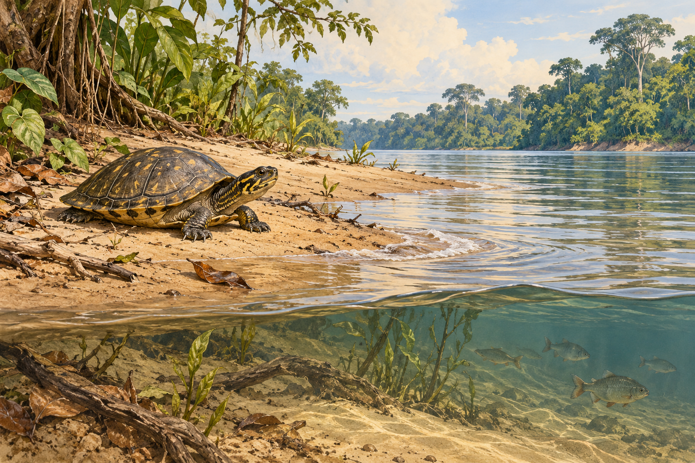

Temperatura y humedad
El DHT22 registra temperatura y humedad del aire. El DS18B20 registra la temperatura del sustrato.
Somos Power Group, equipo de robótica del Liceo N.º 6 de Rivera, Uruguay. Con TariGuard investigamos cómo aportar información a quienes cuidan los nidos de taricaya, Podocnemis unifilis.

Imagen conceptual generada con IA para el proyecto.
Estudiamos los cambios que pueden afectar un sitio de anidación y la información que necesitan las personas que lo vigilan. Nuestro prototipo escolar explora el registro de inclinación, presencia de agua y condiciones ambientales en una maqueta.
La investigación reúne fuentes documentales, consultas a especialistas y el trabajo de construcción y programación del equipo. Consideramos antecedentes tecnológicos como TurtleSense y NEST, y experiencias de conservación comunitaria de la Amazonia.
El DHT22 registra temperatura y humedad del aire. El DS18B20 registra la temperatura del sustrato.
La sonda YL-69 se calibra con referencias seca y mojada. El panel presenta una barra y estados explicados para interpretar la lectura relativa.
La micro:bit registra el ángulo respecto a una posición inicial. El panel puede emitir un aviso de posible invasión de origen indeterminado cuando se supera el límite configurado.
El montaje combina Arduino UNO, dos micro:bit, pantallas locales y una computadora. El monitor recibe información por USB y por el enlace de radio entre las micro:bit. Durante las pruebas se añadieron una vía alternativa de lectura y mensajes de diagnóstico para identificar problemas de recepción.
Las alertas se destacan en rojo y pueden emitir sonido mientras el panel está abierto. El límite de inclinación inicial permite hasta 7° inclusive. Los valores se configuran para los ensayos escolares. El dato de pH está identificado como simulado.
La demostración permite elegir una referencia en el río Caquetá, Colombia, y otra en la zona del lago Musa Karusha o Rimachi, Perú. El mapa identifica las coordenadas como posiciones GPS simuladas de nidos de prueba.
Construimos el montaje, programamos los sensores y desarrollamos el monitor y la simulación. El equipo revisa las lecturas, la calibración y la claridad de las alertas. Los ensayos repetidos, la medición de falsas alarmas y la validación para una aplicación en campo forman parte de los siguientes pasos.
El documento de investigación incluye los antecedentes, las consultas, el índice paginado y los anexos de montaje, evidencias y materiales de consulta.